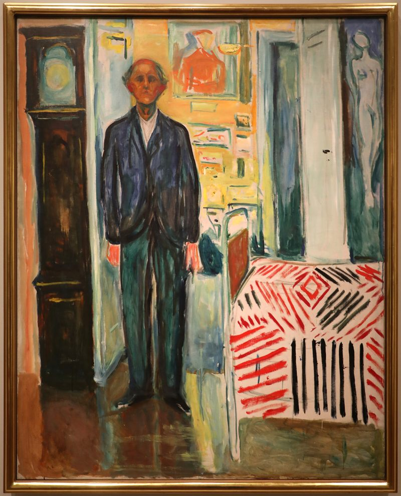

I am a PhD candidate in History at the South Asia Institute, Heidelberg University, supervised by Prof. Dr. Kama Maclean and funded by a DAAD PhD scholarship. My research sits at the intersection of labour history, the history of time, and the political life of the working class in late-colonial North India.
I read for my BA in History at Jamia Millia Islamia in New Delhi (2020) and for my MA in History at the University of Delhi (2022). Before Heidelberg, I worked in Delhi's archives on questions of urban labour, communal violence, and the long afterlife of partition.
[dissertation] Time, (Non)Work and Political Consciousness: The Kanpur Working Class, 1914–47. The project asks how labourers from the agrarian United Provinces, drawn into the cotton and woollen mills of Kanpur, reshaped their experience of time during the transition to industrial work — and what that shift meant for their politics. Rather than reading the clock as the colonial coloniser of working-class life, I argue that Kanpur's mill-workers resisted, negotiated, and at moments turned the clock into an instrument of their own.
[interests] labour history · the history of time and discipline · partition and communalism · the eighteenth-century crisis in South Asia · the urban history of Delhi · archival method.

··· no entries yet ···
Working papers, articles, and reviews will appear here as they are published.